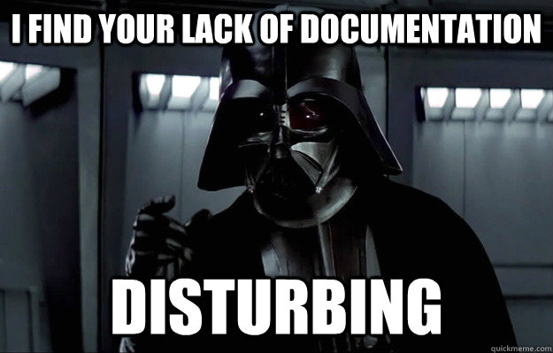

Chapitre 5: Les fonctions⚓︎

La notion de fonction est essentielle en programmation.
Elle permet de construire des codes modulaires, plus faciles à lire et à modifier.
En Python, une fonction se crée avec le mot-clé def.
1. Fonctions sans paramètre, sans valeur renvoyée⚓︎

Exemple fondateur n°1 
| 🐍 Script Python | |
|---|---|
1 2 3 | |
Lorsque l'interpréteur Python parcourt cette fonction, rien ne s'affiche : la fonction est maintenant prête à être appelée, mais n'est pas exécutée tant que l'utilisateur ne le demande pas explicitement.
Ce sera le cas pour toutes les fonctions : elles doivent être appelées pour s'exécuter.
>>> accueil()
bonjour
comment allez-vous ?
Dans ce cas d'utilisation, la fonction accueil n'est qu'un raccourci, une factorisation d'un ensemble d'instructions.
2. Fonction avec paramètre(s), sans valeur renvoyée⚓︎

2.1 Paramètre simple⚓︎
Exemple fondateur n°2
| 🐍 Script Python | |
|---|---|
1 2 3 | |
>>> chat_penible(3)
meoww
meoww
meoww
Vocabulaire
- La valeur
nest appelée paramètre de la fonctionchat_penible. - On dit qu'on passe le paramètre
nà la fonctionchat_penible. - Dans l'exemple ci-dessus, on dit qu'on a appelé la fonction
chat_penibleavec l'argument 3.
Remarques :
- là encore, notre fonction ne renvoie rien : on peut encore la considérer comme un ensemble d'instructions factorisé dans un même bloc. À la différence de la fonction sans paramètre, ces instructions ne sont pas toujours les mêmes, grâce à l'utilisation du paramètre demandé à l'utilisateur.
- la fonction bien connue
print()est une fonction à paramètre, qui affiche dans la console le contenu du paramètre.
2.2 Paramètres multiples⚓︎
Une fonction peut avoir de multiples paramètres :
Exemple fondateur n°3
| 🐍 Script Python | |
|---|---|
1 2 3 | |
>>> repete("NSI", 3)
NSI
NSI
NSI
Remarque :
- L'ordre des paramètres passés est alors important ! Le code ci-dessous est incorrect.
>>> repete(3, "test")
---------------------------------------------------------------------------
TypeError Traceback (most recent call last)
<ipython-input-9-a84914f8a6c6> in <module>()
----> 1 repete(3, "test")
<ipython-input-8-7dc8032e3f17> in repete(mot, k)
1 def repete(mot, k) :
----> 2 for i in range(k):
3 print(mot)
4
5 repete("NSI", 5)
TypeError: 'str' object cannot be interpreted as an integer
3. Fonction avec paramètre(s) et avec valeur renvoyée⚓︎

Principe :
- On retrouve ici la notion classique de fonction rencontrée en mathématiques : un procédé qui prend un nombre et en renvoie un autre.
- En informatique, l'objet renvoyé ne sera pas forcément un nombre (cela pourra être aussi une liste, un tableau, une image...).
- Le renvoi d'une valeur se fait grâce au mot-clé
return.
Exemple fondateur n°4
La fonction mathématique \(f : x \longmapsto 2x+3\) se codera par :
| 🐍 Script Python | |
|---|---|
1 2 | |
>>> f(10)
23
4. Autour du return⚓︎
4.1 La force du return⚓︎
Différence fondamentale entre return et print 
Le mot-clé return de l'exemple précédent fait que l'expression f(10) est égale à 23.
On peut d'ailleurs écrire en console :
>>> f(10) + 5
28
| 🐍 Script Python | |
|---|---|
1 2 | |
g fait correctement son travail :
>>> g(10)
23
g se contente d'afficher sa valeur calculée, et non pas de la renvoyer. En effet :
>>> g(10) + 5
23
Traceback (most recent call last):
File "<pyshell>", line 1, in <module>
TypeError: unsupported operand type(s) for +: 'NoneType' and 'int'
En résumé :

4.2 Le return est un siège éjectable⚓︎
Le mot-clé return provoque une éjection du code : tout ce qui est situé après le return ne sera pas exécuté.
Observez la différence entre les fonctions g et h .
| 🐍 Script Python | |
|---|---|
1 2 3 | |
>>> g(4)
ce texte sera bien affiché
11
| 🐍 Script Python | |
|---|---|
1 2 3 | |
>>> h(4)
11
4.3 Les fonctions sans return sont-elles des fonctions ?⚓︎
-
Pour les puristes, une fonction sans valeur renvoyée sera plutôt appelée procédure. Le mot fonction est alors réservé aux fonctions qui ont effectivement un
return. -
On peut doter artificiellement toutes les fonctions d'un
return, en renvoyant la valeurNone:🐍 Script Python 1 2 3 4
def chat_penible(n): for k in range(n): print("meoww") return None
5. Variables locales, variables globales⚓︎
5.1 Notion d'espace de noms⚓︎
Définitions
- Les variables définies dans le corps d'une fonction sont appelées variables locales.
- Les variables définies dans le corps du programme (sous-entendu : pas à l'intérieur d'une fonction) sont appelées variables globales.
On dit que les fonctions créent leur «espace de noms» (espace est à prendre au sens d'univers), un espace qui leur est propre.
Quelles sont les règles régissant ces espaces de noms ? Les frontières entre ces espaces sont elles poreuses ?
5.2 Règles d'accès en lecture et en modification d'une variable suivant son espace d'origine⚓︎
Règles d'accès aux variables locales et globales
- règle 1 : une variable locale (définie au cœur d'une fonction) est inaccessible hors de cette fonction.
- règle 2 : une variable globale (définie à l'extérieur d'une fonction) est accessible en lecture à l'intérieur d'une fonction.
- règle 3 : une variable globale (définie à l'extérieur d'une fonction) ne peut pas être modifiée à l'intérieur d'une fonction.
Exercice
On considère les 3 codes ci-dessous. Pour chacun, dire sans l'exécuter s'il est valide ou non. S'il ne l'est pas, identifier la règle (parmi celles énoncées ci-dessus) qui est bafouée.
code A
| 🐍 Script Python | |
|---|---|
1 2 3 4 5 6 | |
code B
| 🐍 Script Python | |
|---|---|
1 2 3 4 5 | |
code C
| 🐍 Script Python | |
|---|---|
1 2 3 4 5 6 7 8 9 10 11 | |
Ce code n'est pas valide, car il contrevient à la règle 3.
ligne 4 : la modification de la variable globale points est interdite.
Ce code n'est pas valide, car il contrevient à la règle 1.
ligne 5 : l'accès à la variable locale x est interdit.
Ce code est valide.
ligne 6 : l'accès à la variable globale bonus est autorisé, selon la règle 2.
À propos de la règle n°3
(toute la vérité, rien que la vérité)
-
Pour certains types de variables (listes, dictionnaires...), la modification d'une variable globale à l'intérieur du corps d'une fonction est en fait possible (contrairement à ce qu'énonce la règle 3). Mais cela reste très fortement déconseillé.
-
Pour les autres types de variables, on peut même forcer pour avoir cette possibilité en utilisant le mot
globalà l'intérieur de la fonction. Mais il faut essayer d'éviter ceci. -
Une fonction ne doit modifier que les variables qu'elle crée (ses variables locales) ou bien les variables qu'on lui a données en paramètre. C'est un ordre, mais vous pouvez choisir de l'ignorer, tout comme vous pouvez choisir de passer au feu rouge.

- Une fonction qui ne respecte pas cette règle présente des effets de bord : on peut peut-être arriver à les gérer sur un «petit» code, mais cela devient illusoire sur un code utilisant de multiples fonctions.
En résumé
- Ne pas faire cela :
🐍 Script Python 1 2 3 4 5 6 7 8
# PAS BIEN score = 0 def ramasse_objet(objet): global score if objet == "champignon": score += 20 if objet == "banane": score -= 300🐍 Console Python>>> ramasse_objet("champignon") >>> score 20 - Faire plutôt ceci :
🐍 Script Python 1 2 3 4 5 6 7 8
# BIEN score = 0 def ramasse_objet(objet, score): # ma fonction veut modifier score ? if objet == "champignon": # -> ok, je mets score dans ses paramètres score += 20 if objet == "banane": score -= 300 return score # je renvoie le nouveau score🐍 Console Python>>> score = ramasse_objet("champignon", score) >>> score 20
6. Documenter une fonction⚓︎

6.1 Help !⚓︎
Si une fonction peut être assimilée à un outil, il est normal de se demander si cet outil possède un mode d'emploi.
Observons les fonctions pré-définies par Python, et notamment une des premières que nous avons rencontrées : la fonction print(). Son mode d'emploi est accessible grâce à la commande help(print).
>>> help(print)
Help on built-in function print in module builtins:
print(...)
print(value, ..., sep=' ', end='\n', file=sys.stdout, flush=False)
Prints the values to a stream, or to sys.stdout by default.
Optional keyword arguments:
file: a file-like object (stream); defaults to the current sys.stdout.
sep: string inserted between values, default a space.
end: string appended after the last value, default a newline.
flush: whether to forcibly flush the stream
Pensez à utiliser cette fonction help() (en d'autres termes, RTFM)
6.2 Créer le mode d'emploi de ses propres fonctions : les docstrings⚓︎

Il est possible, voire souhaitable (dès qu'on créé un code comportant plusieurs fonctions, et/ou qui sera amené à être lu par d'autres personnes), de créer un mode d'emploi pour ses fonctions. On appelle cela écrire la docstring de la fonction, et c'est très simple : il suffit de l'encadrer par des triples double-quotes """.
Exemple
| 🐍 Script Python | |
|---|---|
1 2 3 4 5 6 | |
On peut donc maintenant demander de l'aide pour cette fonction :
>>> help(chat_penible)
Help on function chat_penible in module __main__:
chat_penible(n)
Affiche n fois la chaine de caractères "meoww"
Plus de renseignements sur les docstrings ici
6.3 Indiquer les types⚓︎
Il est recommandé, mais pas obligatoire, que les fonctions aient des annotations de type pour tous les arguments ainsi que pour le retour.
Exemple de typage de fonction
-
Sans annotations de typage :
🐍 Script Pythondef greeting(name): return 'Hello ' + name -
Avec annotations de typage :
🐍 Script Pythondef greeting(name: str) -> str: return 'Hello ' + name
Dans cet exemple, on souhaite indiquer que la fonction greeting() prend un argument de type string et qu'elle renvoie également une chaîne de caractères (str).
Exemple de typage de procédure
def chat_penible(n: int) -> None:
"""
Affiche n fois la chaine de caractères "meoww"
"""
for k in range(n):
print("meoww")
Dans cet exemple, on souhaite indiquer que chat_penible() est une procédure (c'est-à-dire une fonction qui ne retourne aucune valeur) qui prend un argument de type entier.
7. Jeux de tests pour une fonction⚓︎

Les exercices de cette feuille sont (presque) tous livrés avec un jeu de tests. Il s'agit d'une fonction, souvent appelée test_nom_de_la fonction(), qui va regrouper les différents tests qu'on pourrait faire en console pour vérifier que la fonction a le comportement désiré.
Ces tests reposent sur le mot-clé assert, qui va lever une erreur lorsqu'il est suivi d'une expression évaluée à False :
>>> assert 3 > 2
>>> assert 3 > 5
Traceback (most recent call last):
File "<pyshell>", line 1, in <module>
AssertionError
>>> assert True
>>> assert False
Traceback (most recent call last):
File "<pyshell>", line 1, in <module>
AssertionError
Exemple d'un jeu de tests
| 🐍 Script Python | |
|---|---|
1 2 3 4 5 6 7 8 9 10 11 | |
Il faut vérifier que les tests couvrent toutes les situations possibles, mais ce n'est pas toujours facile !
Exercice
On considère (à nouveau !) le jeu du FizzBuzz.
Rappel des règles
- si le nombre est divisible par 3, on ne le dit pas et on le remplace par Fizz.
- si le nombre est divisible par 5, on ne le dit pas et on le remplace par Buzz.
- si le nombre est divisible par 3 et par 5, on ne le dit pas et on le remplace par FizzBuzz.
On souhaite écrire la fonction fizzbuzz(n) qui renverra soit le nombre n, soit le mot par lequel il faut le remplacer.
- Écrire la fonction
test_fizzbuzz()qui testera la fonctionfizzbuzz(n). - Écrire la fonction
fizzbuzz(n).